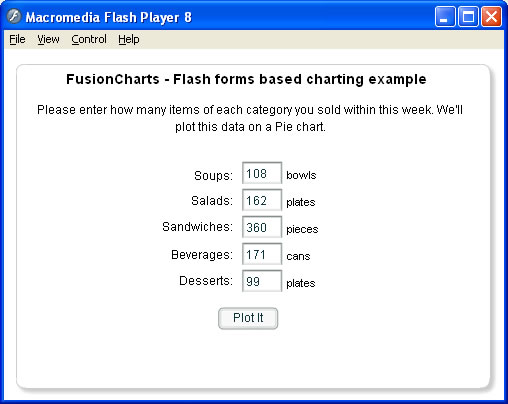
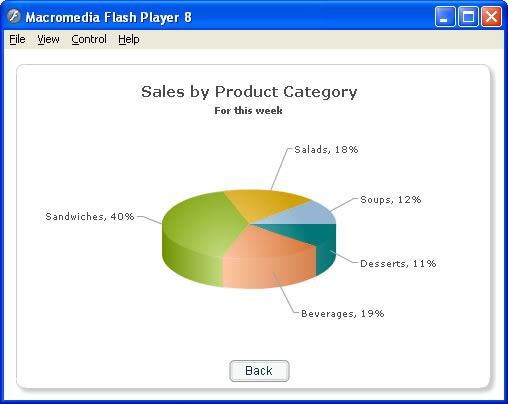
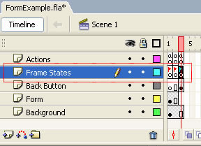
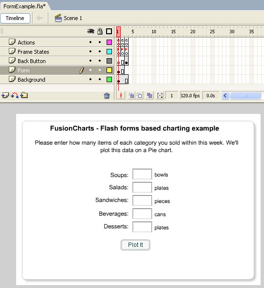

| FusionCharts and Flash > Advanced Examples |
In our previous examples, we had seen how to load FusionCharts in your Flash movies in a very basic way. In this advanced example, we'll assimilate all the information that you've gained from previous examples and use that with new concepts to create an interactive form based reporting application. We'll build a form that takes in weekly product wise sales information for a restaurant and then plot it on a 3D Pie chart. This application explains the following new concepts pertinent to FusionCharts:
If you're excited just by reading the possibilities above, let's inspire you more by showing how the application would look like when it's finished: |
|  |
Initial state of the application, where the user enters sales data for the restaurant. |
|  |
Final chart generated when the user enters requisite data and then clicks on "Plot It" button. Now that you're already jumping, let's straight jump into action. |
| Setting the movie |
For this example, we'll create a new .fla and name it as FormExample.fla. We keep it under the same FlashExamples folder so that we do not have to make additional copies of com folder. In this application, we've three states.
Each state is represented by a key-frame as shown below. The names of the state keyframes are FInit, FForm and FChart respectively. Shown below is a screenshot: |
|  |
As you can see above we've following additional layers in this movie:
|
| Setting the form |
The form for this application looks as under. We've 5 text fields on this form to accept data for 5 products. Apart from that, it also contains a few descriptive labels.  |
| Binding Actions |
Let's now switch our focus to the core of this application - ActionScripts which bind the entire application. We'll study the ActionScripts frame by frame. Let's first see the ActionScript contained in frame 1: |
/**
* In this frame, we initialize the chart object.
* We initialize it only once but re-use it multiple times
* later.
*/
//Include & import files necessary for Chart creation
#include "com/fusioncharts/includes/LoadingFunctions.as"
#include "com/fusioncharts/includes/AppMessages.as"
import com.fusioncharts.core.charts.Pie3DChart;
//Create container movie clip for chart
var chartContainerMC:MovieClip = this.createEmptyMovieClip("ChartHolder", 1);
//Initialize chart object.
var salesChart:Pie3DChart = new Pie3DChart(chartContainerMC, 1, 450, 300, 20, 15, false, "EN", "noScale");
//Goto next frame
gotoAndStop("FForm"); |
In this frame, we're basically including and importing the required files for chart. We're also creating the empty movie clip for the chart and then instantiating the Pie3DChart. The actions in this frame run only once during the entire application. So, we're effectively creating only one instance of Pie3DChart. We'll be updating the same instance with new data as and when the user changes the data in form. Let's see the code that runs the form in frame 2: |
/**
* This frame is an application state which contains the input form
* for the user.
*/
//Restrict text fields to accept only numeric values
txtSoups.restrict = "0-9";
txtSalads.restrict = "0-9";
txtSandwiches.restrict = "0-9";
txtBeverages.restrict = "0-9";
txtDesserts.restrict = "0-9";
//Set default values for text fields - just for demo.
txtSoups.text = "108";
txtSalads.text = "162";
txtSandwiches.text = "360";
txtBeverages.text = "171";
txtDesserts.text = "99";
//Define the listener for "Plot" button's click event.
var btnListener:Object = new Object();
btnListener.click = function() {
//When the plot button is clicked, we need to generate XML document
//from data provided in form fields.
//Build the XML data and convey it to chart
var strXML:String="<chart bgAlpha='0,0' caption='Sales by Product Category' subCaption='For this week'
showPercentValues='1' pieSliceDepth='30'>";
//Add data to it
strXML = strXML + "<set label='Soups' value='" + txtSoups.text + "' />";
strXML = strXML + "<set label='Salads' value='" + txtSalads.text + "' />";
strXML = strXML + "<set label='Sandwiches' value='" + txtSandwiches.text + "' />";
strXML = strXML + "<set label='Beverages' value='" + txtBeverages.text + "' />";
strXML = strXML + "<set label='Desserts' value='" + txtDesserts.text + "' />";
//Let's add some styling to caption
strXML = strXML + "<styles><definition><style type='font' name='CaptionFont' size='15'/>
</definition><application><apply toObject='caption' styles='CaptionFont' />
</application></styles>";
strXML = strXML + "</chart>";
//Convey the XML data to chart.
salesChart.setXMLData(new XML(strXML));
//We draw the chart on next frame. So, go there.
gotoAndStop("FChart");
};
//Attach the event listener to button.
btnPlot.addEventListener("click", btnListener);
//Stop till an action is invoked.
stop(); |
Here, we're:
In FChart frame, we've the following actions: |
/** * We actually draw the chart in this frame. */ //Show the chart container. chartContainerMC._visible = true; //Draw the chart salesChart.render(); //Define the listener for back button's click event. var btnListener:Object = new Object(); btnListener.click = function(){ //Re-initialize the chart, so that user can plot again //as we're allowing the user to go back to form and then //chart the data again. salesChart.remove(); salesChart.reInit(); //Hide the chart container so that it doesn't overlap form. chartContainerMC._visible = false; //Goto the form gotoAndStop("FForm"); } //Add event listener btnBack.addEventListener("click",btnListener); stop(); |
In the above code, we're first setting the visibility of chart container movie clip (chartContainerMC) to true. If this application is running for the first time, the visibility of this movie clip is already true. However, if the user has viewed the chart once, then updated data in form and then clicked "Plot it" chart button, the container for chart is hidden by us. So, we set it to visible again. Thereafter, we straight render the chart by calling render() method on salesChart object (which is an instance of Pie3DChart). The XML data was already conveyed to chart in previous frame. We also define the event listener for "Back" button. In this handler, we're first removing the chart using remove() method of this chart. This method removes all the items in the chart (barring logger). The chart still stays in the memory though. remove() method is used when you want to use the same chart object again in your movie to plot another chart. Since we intend to re-use the chart object to plot the data again, we call the remove() method. After the remove() method, we ask the chart to re-initialize by calling the reInit() method. This method prepares the chart to accept new data and be able to render again. reInit() method should always be called after remove() method of the chart, if you intend to use the chart object to plot another chart. If you need to destroy the chart altogether (when you do not need to plot any other charts using the same object), you should call the destroy() method of chart. e.g., salesChart.destroy(). This method removes all the associated movie clips, listeners, events and data containers for the chart. We also hide the container movie clip for the chart, as that's not required in the Form visible state. Finally, we go back to the form state of the application. When you now run the application, you'll get the desired results (as shown above). This example demonstrates all the features that you can attain when using FusionCharts within your Flash movies. |